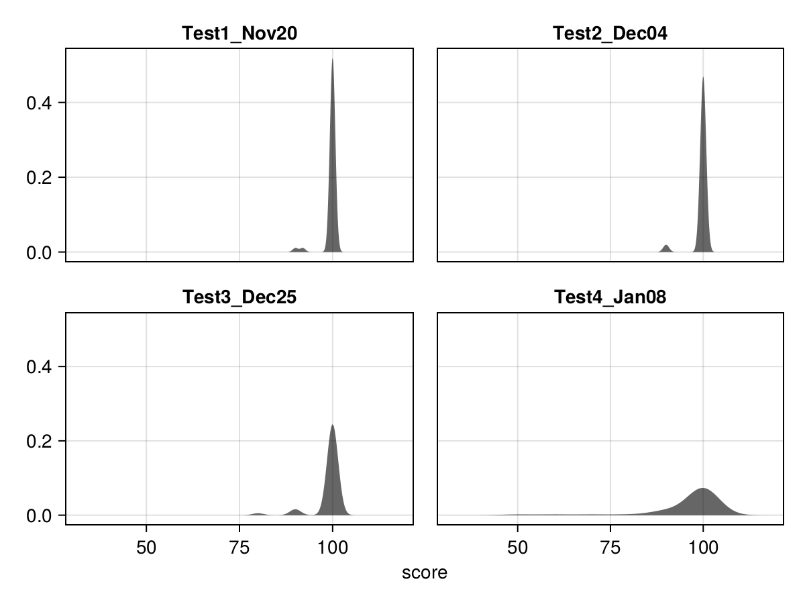
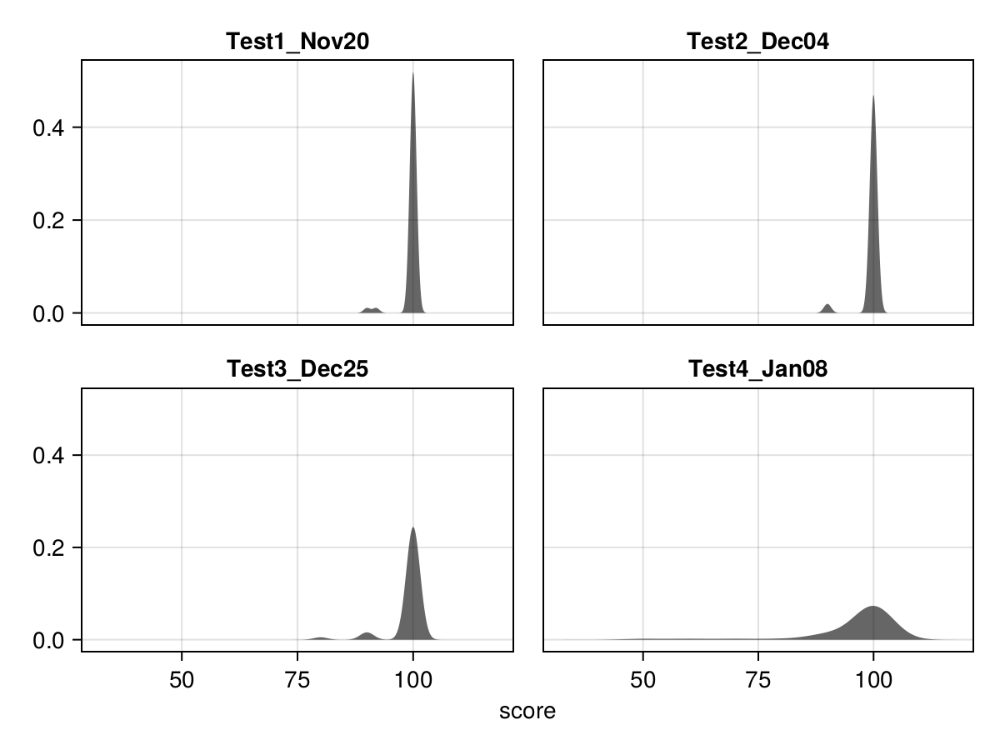

課堂測驗成績
成績分布

組內互評摘要
評分者摘要
| **Evaluator** | **已評組員數** |
|--------------:|---------------:|
受評者摘要
| **Evaluatee** | **被評次數** |
|--------------:|-------------:|
This page was generated using Literate.jl.

| **Evaluator** | **已評組員數** |
|--------------:|---------------:|
| **Evaluatee** | **被評次數** |
|--------------:|-------------:|
This page was generated using Literate.jl.
Settings
This document was generated with Documenter.jl version 1.1.2 on Wednesday 6 December 2023. Using Julia version 1.9.4.